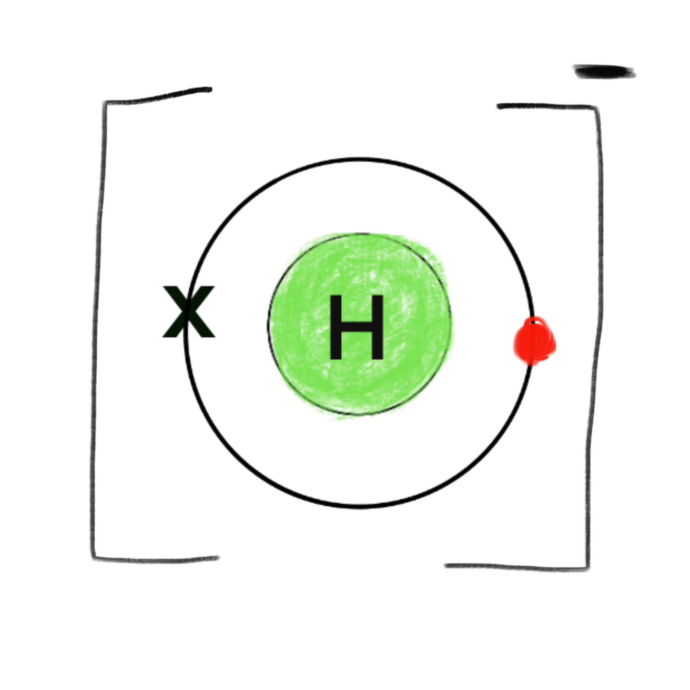
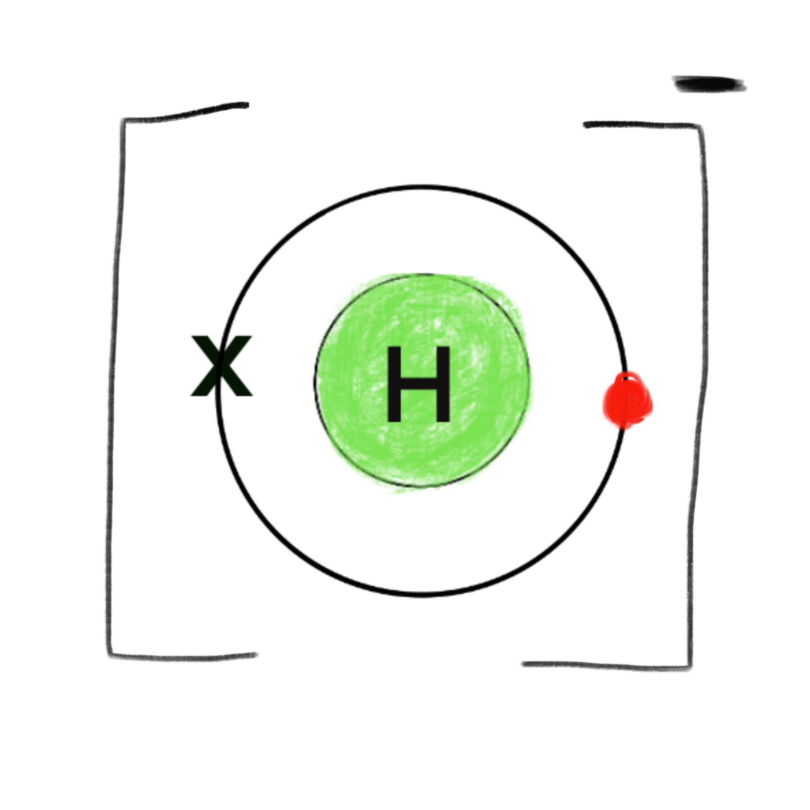

Ionic Bonding
How ions form
Electrons are taken in by some atoms and given away by other atoms
so they become charged ions.
Ions of opposite charge stick together.
(a bit like magnets)
This is called electrostatic attraction.
Atoms accept extra electrons until their outermost electron shell is full.
Or, if it is easier, they give away electrons until their outer shell is empty.
In general
- metals give away their outer electrons to become positive ions
- non-metals take in electrons to become negative ions
Structure of Ionic Compounds
In solid ionic compounds each ion is surrounded by ions of the opposite charge, in an endlessly repeated structure. A giant ionic lattice.How do we know this
First of all scientists made educated guesses. They predicted how the ions were arranged. Later X ray crystallography measured how the ions were arranged. Recently ions have been viewed through massively powerful electron microscopes.When ionic compounds dissolve
Ions get surrounded by solvent molecules. They no longer stick to other ions and they are free to move.Try this
- Marsh mallow and cocktail stick model
- Grow your own salt crystal
- Investigate what happens when salt dissolves in water
Examples : Describing Ions
Ions are shown with big square brackets around them and the charge
on the outside.
Hydrogen
Hydrogen atom
A Hydrogen atom has a single electron in it's outer shell

Hydrogen can make either positive ions(cations) or, more rarely negative ions(anions)
A Hydrogen atom has a single electron in it's outer shell
Hydrogen can make either positive ions(cations) or, more rarely negative ions(anions)
Hydrogen Cation, Proton
The single electron is lost. Leaves the proton that is the hydrogen atoms nucleus.

The single electron is lost. Leaves the proton that is the hydrogen atoms nucleus.
Hydrogen anion
By accepting an extra electron into its outer shell a -1 ion is produced and the shell is full. This is a stable configuration. This is a hydride ion. Hydride ions only exist under extreme conditions

By accepting an extra electron into its outer shell a -1 ion is produced and the shell is full. This is a stable configuration. This is a hydride ion. Hydride ions only exist under extreme conditions
